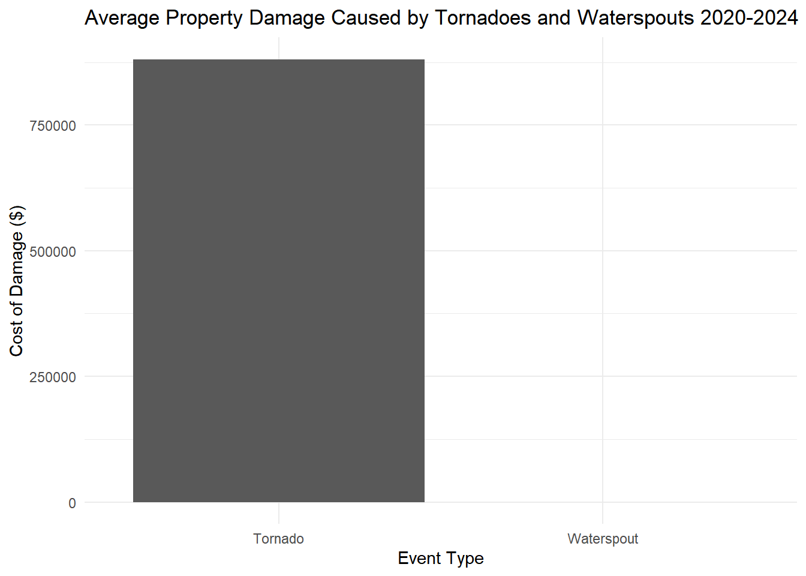
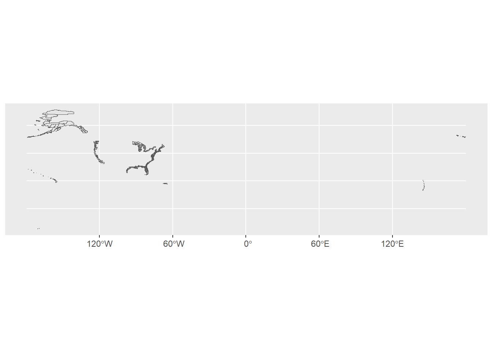
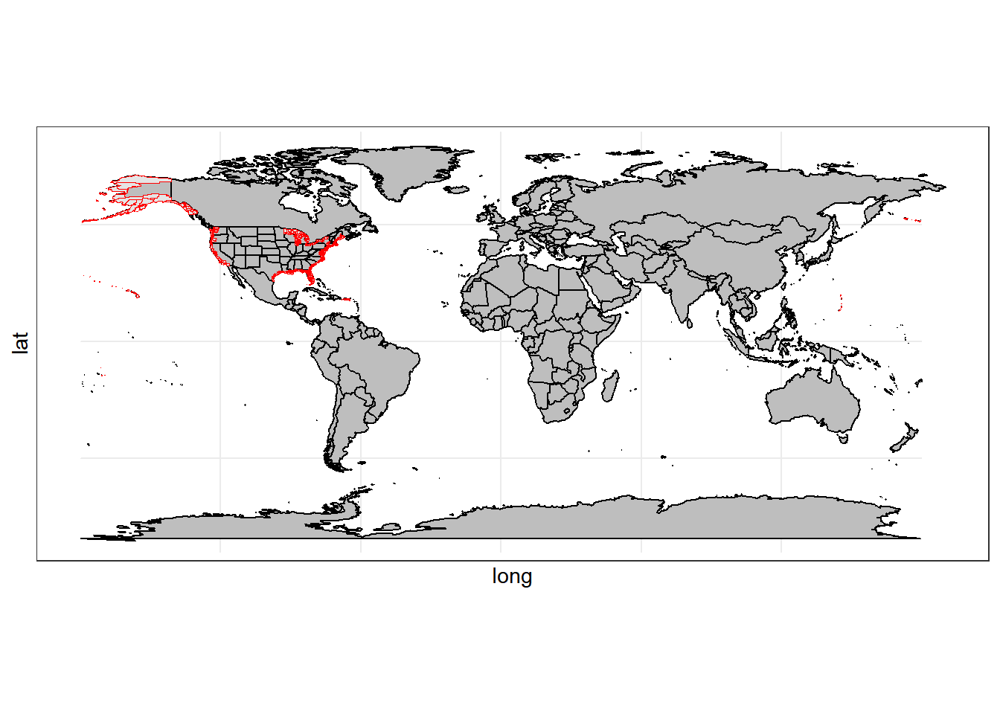
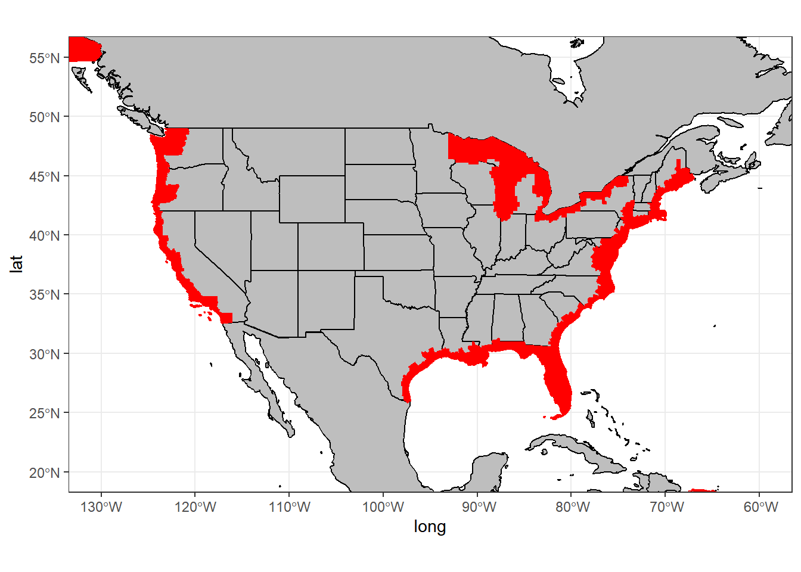
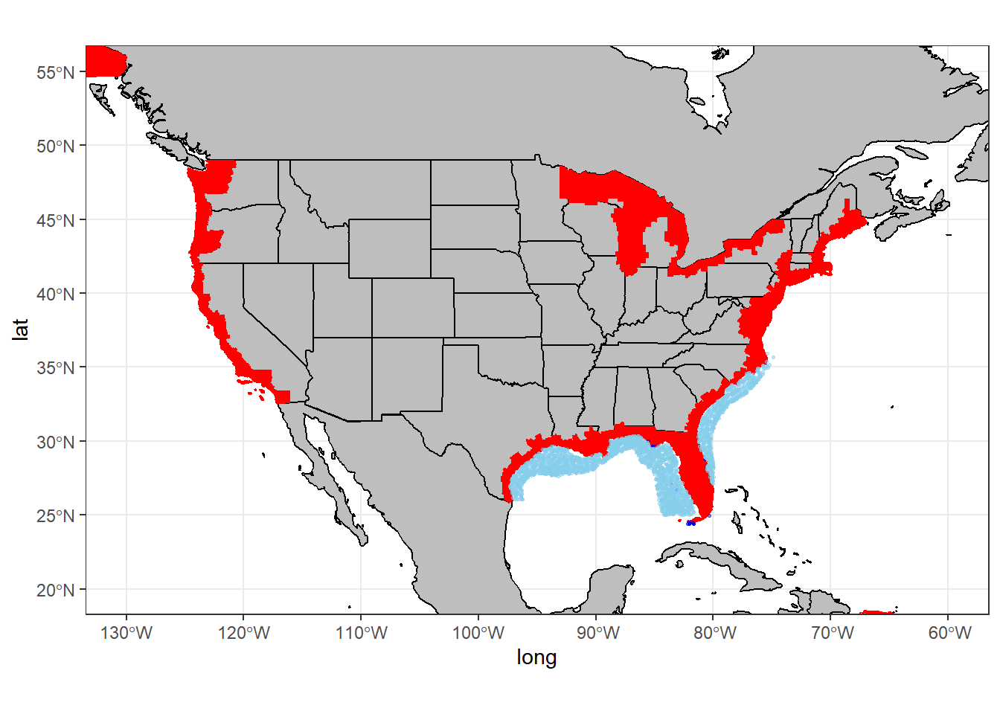
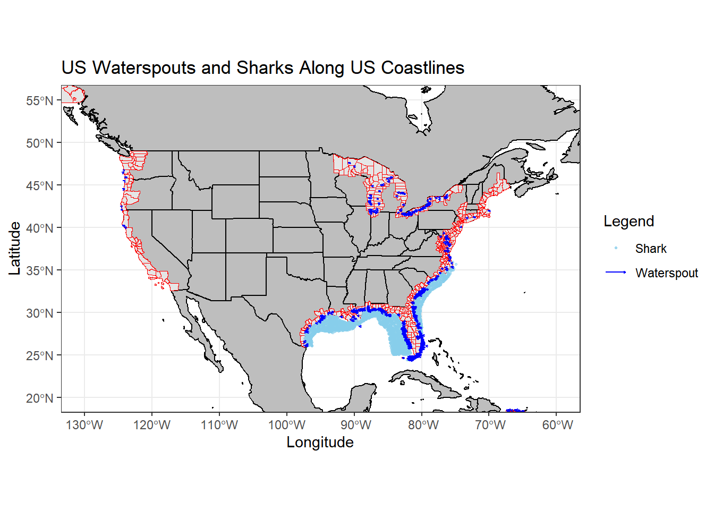
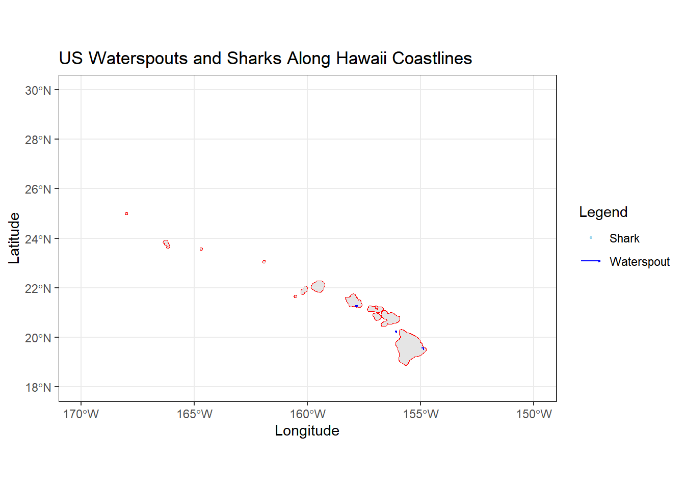
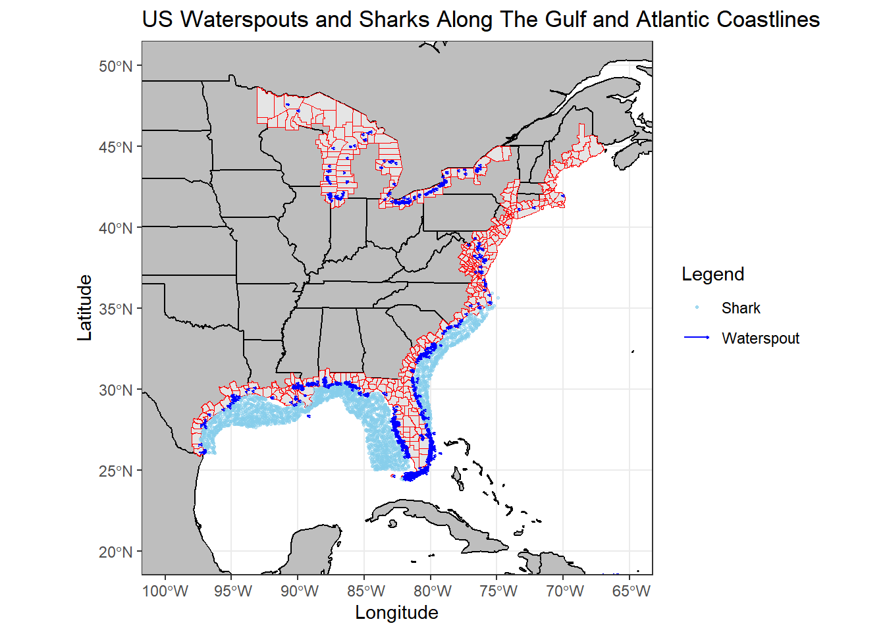
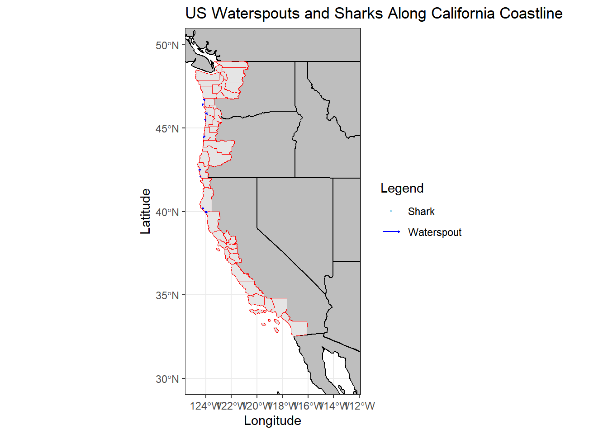

In the Gulf of Mexico and the Atlantic Ocean, tornadoes that form over water (also known as “Waterspouts”) in shark-infested waters, that also move inwards towards land, do not have the potential to carry sharks over towards mainland cities to cause a disruption similar to the movie ‘Sharknado’.
When plotting the data for sharks and waterspouts, it is apparent that waterspouts are not a common occurrence ( at least in the past five years ). These waterspouts have not caused any major damage to property or crops, and no deaths or injuries have been recorded, they either do not possess the strength to do so and many of these waterspouts do not last longer than an hour. The most action that has happened has been an incident where a waterspout damaged two vehicles and a power line, causing $5000 in damages. But when compared to tornadoes, this is very minuscule (Figure 1). This clearly shows that tornadoes that form on water lack the power necessary to lift sharks. In a perfect world, the better way to compare power is to compare levels on the Tor F Scale. The scale that ranks how strong a tornado is from EF1 to EF5. However, waterspouts are not considered tornadoes and they do not have a power scale similar to tornadoes.
── Conflicts ────────────────────────────────────────── tidyverse_conflicts() ──
✖ dplyr::filter() masks stats::filter()
✖ dplyr::lag() masks stats::lag()
ℹ Use the conflicted package (<http://conflicted.r-lib.org/>) to force all conflicts to become errors
library(stringr)library(mapdata)
Warning: package 'mapdata' was built under R version 4.4.3
Loading required package: maps
Warning: package 'maps' was built under R version 4.4.3
Attaching package: 'maps'
The following object is masked from 'package:purrr':
map
Rows: 67036 Columns: 51
── Column specification ────────────────────────────────────────────────────────
Delimiter: ","
chr (26): STATE, MONTH_NAME, EVENT_TYPE, CZ_TYPE, CZ_NAME, WFO, BEGIN_DATE_T...
dbl (25): BEGIN_YEARMONTH, BEGIN_DAY, BEGIN_TIME, END_YEARMONTH, END_DAY, EN...
ℹ Use `spec()` to retrieve the full column specification for this data.
ℹ Specify the column types or set `show_col_types = FALSE` to quiet this message.
Warning: One or more parsing issues, call `problems()` on your data frame for details,
e.g.:
dat <- vroom(...)
problems(dat)
Rows: 75596 Columns: 51
── Column specification ────────────────────────────────────────────────────────
Delimiter: ","
chr (26): STATE, MONTH_NAME, EVENT_TYPE, CZ_TYPE, CZ_NAME, WFO, BEGIN_DATE_T...
dbl (24): BEGIN_YEARMONTH, BEGIN_DAY, BEGIN_TIME, END_YEARMONTH, END_DAY, EN...
lgl (1): CATEGORY
ℹ Use `spec()` to retrieve the full column specification for this data.
ℹ Specify the column types or set `show_col_types = FALSE` to quiet this message.
Rows: 69886 Columns: 51
── Column specification ────────────────────────────────────────────────────────
Delimiter: ","
chr (26): STATE, MONTH_NAME, EVENT_TYPE, CZ_TYPE, CZ_NAME, WFO, BEGIN_DATE_T...
dbl (25): BEGIN_YEARMONTH, BEGIN_DAY, BEGIN_TIME, END_YEARMONTH, END_DAY, EN...
ℹ Use `spec()` to retrieve the full column specification for this data.
ℹ Specify the column types or set `show_col_types = FALSE` to quiet this message.
Warning: One or more parsing issues, call `problems()` on your data frame for details,
e.g.:
dat <- vroom(...)
problems(dat)
Rows: 61389 Columns: 51
── Column specification ────────────────────────────────────────────────────────
Delimiter: ","
chr (26): STATE, MONTH_NAME, EVENT_TYPE, CZ_TYPE, CZ_NAME, WFO, BEGIN_DATE_T...
dbl (24): BEGIN_YEARMONTH, BEGIN_DAY, BEGIN_TIME, END_YEARMONTH, END_DAY, EN...
lgl (1): CATEGORY
ℹ Use `spec()` to retrieve the full column specification for this data.
ℹ Specify the column types or set `show_col_types = FALSE` to quiet this message.
Rows: 61279 Columns: 51
── Column specification ────────────────────────────────────────────────────────
Delimiter: ","
chr (26): STATE, MONTH_NAME, EVENT_TYPE, CZ_TYPE, CZ_NAME, WFO, BEGIN_DATE_T...
dbl (25): BEGIN_YEARMONTH, BEGIN_DAY, BEGIN_TIME, END_YEARMONTH, END_DAY, EN...
ℹ Use `spec()` to retrieve the full column specification for this data.
ℹ Specify the column types or set `show_col_types = FALSE` to quiet this message.
# Remove rows containing NA values and Keep the two events we are interested intornado_2020_2024_clean_dataframe <- tornado_2020_2024_dataframe %>%drop_na(BEGIN_LAT, BEGIN_LON, END_LON, END_LAT) %>%filter(str_detect(EVENT_TYPE, "Tornado") |str_detect(EVENT_TYPE, "Waterspout"))# Filter for Waterspoutswaterspout_dataframe <- tornado_2020_2024_clean_dataframe %>%filter(EVENT_TYPE =='Waterspout')# Filter for tornadic waterspoutstornadic_waterspout_dataframe <- waterspout_dataframe %>%filter(str_detect(EVENT_NARRATIVE, 'tornad') |str_detect(EVENT_NARRATIVE, 'Tornad'))
# Average Property Damage Caused by Tornadoes vs Waterspoutsstr(tornado_2020_2024_clean_dataframe)
tibble [8,671 × 51] (S3: tbl_df/tbl/data.frame)
$ BEGIN_YEARMONTH : num [1:8671] 202405 202411 202402 202402 202402 ...
$ BEGIN_DAY : num [1:8671] 19 5 27 27 27 27 27 27 27 27 ...
$ BEGIN_TIME : num [1:8671] 1839 1101 1932 1934 1815 ...
$ END_YEARMONTH : num [1:8671] 202405 202411 202402 202402 202402 ...
$ END_DAY : num [1:8671] 19 5 27 27 27 27 27 27 27 27 ...
$ END_TIME : num [1:8671] 1902 1102 1935 1937 1816 ...
$ EPISODE_ID : num [1:8671] 190905 196653 188190 188190 188190 ...
$ EVENT_ID : num [1:8671] 1184919 1216653 1155977 1155978 1155954 ...
$ STATE : chr [1:8671] "OKLAHOMA" "IOWA" "ILLINOIS" "ILLINOIS" ...
$ STATE_FIPS : num [1:8671] 40 19 17 17 17 17 18 17 17 17 ...
$ YEAR : num [1:8671] 2024 2024 2024 2024 2024 ...
$ MONTH_NAME : chr [1:8671] "May" "November" "February" "February" ...
$ EVENT_TYPE : chr [1:8671] "Tornado" "Tornado" "Tornado" "Tornado" ...
$ CZ_TYPE : chr [1:8671] "C" "C" "C" "C" ...
$ CZ_FIPS : num [1:8671] 39 51 31 31 103 89 89 89 89 37 ...
$ CZ_NAME : chr [1:8671] "CUSTER" "DAVIS" "COOK" "COOK" ...
$ WFO : chr [1:8671] "OUN" "DMX" "LOT" "LOT" ...
$ BEGIN_DATE_TIME : chr [1:8671] "19-MAY-24 18:39:00" "05-NOV-24 11:01:00" "27-FEB-24 19:32:00" "27-FEB-24 19:34:00" ...
$ CZ_TIMEZONE : chr [1:8671] "CST-6" "CST-6" "CST-6" "CST-6" ...
$ END_DATE_TIME : chr [1:8671] "19-MAY-24 19:02:00" "05-NOV-24 11:02:00" "27-FEB-24 19:35:00" "27-FEB-24 19:37:00" ...
$ INJURIES_DIRECT : num [1:8671] 0 0 0 0 0 0 0 0 0 0 ...
$ INJURIES_INDIRECT : num [1:8671] 0 0 0 0 0 0 0 0 0 0 ...
$ DEATHS_DIRECT : num [1:8671] 0 0 0 0 0 0 0 0 0 0 ...
$ DEATHS_INDIRECT : num [1:8671] 0 0 0 0 0 0 0 0 0 0 ...
$ DAMAGE_PROPERTY : chr [1:8671] "150.00K" "120.00K" "0.00K" "0.00K" ...
$ DAMAGE_CROPS : chr [1:8671] "0.00K" "0.00K" "0.00K" "0.00K" ...
$ SOURCE : chr [1:8671] "NWS Storm Survey" "Trained Spotter" "NWS Storm Survey" "NWS Storm Survey" ...
$ MAGNITUDE : num [1:8671] NA NA NA NA NA NA NA NA NA NA ...
$ MAGNITUDE_TYPE : chr [1:8671] NA NA NA NA ...
$ FLOOD_CAUSE : chr [1:8671] NA NA NA NA ...
$ CATEGORY : num [1:8671] NA NA NA NA NA NA NA NA NA NA ...
$ TOR_F_SCALE : chr [1:8671] "EF1" "EF0" "EF1" "EF1" ...
$ TOR_LENGTH : num [1:8671] 6.7 0.32 2.58 2.45 0.05 1.16 2.17 2.8 8.13 2.59 ...
$ TOR_WIDTH : num [1:8671] 400 50 110 160 10 125 75 175 125 175 ...
$ TOR_OTHER_WFO : chr [1:8671] NA NA NA NA ...
$ TOR_OTHER_CZ_STATE: chr [1:8671] NA NA NA NA ...
$ TOR_OTHER_CZ_FIPS : chr [1:8671] NA NA NA NA ...
$ TOR_OTHER_CZ_NAME : chr [1:8671] NA NA NA NA ...
$ BEGIN_RANGE : num [1:8671] 8 4 0 1 1 1 1 3 2 1 ...
$ BEGIN_AZIMUTH : chr [1:8671] "WNW" "ESE" "SSE" "S" ...
$ BEGIN_LOCATION : chr [1:8671] "CUSTER CITY" "BELKNAP" "HOFFMAN ESTATES" "SOUTH BARRINGTON" ...
$ END_RANGE : num [1:8671] 5 4 2 2 1 0 2 0 1 2 ...
$ END_AZIMUTH : chr [1:8671] "N" "ESE" "S" "SSW" ...
$ END_LOCATION : chr [1:8671] "CUSTER CITY" "BELKNAP" "INVERNESS" "INVERNESS" ...
$ BEGIN_LAT : num [1:8671] 35.7 40.8 42.1 42.1 41.7 ...
$ BEGIN_LON : num [1:8671] -99 -92.3 -88.1 -88.1 -89.1 ...
$ END_LAT : num [1:8671] 35.7 40.8 42.1 42.1 41.7 ...
$ END_LON : num [1:8671] -98.9 -92.3 -88.1 -88.1 -89.1 ...
$ EPISODE_NARRATIVE : chr [1:8671] "Significant severe weather occurred across portions of western into central Oklahoma from the late afternoon of"| __truncated__ "A brief tornado occurred with a shower in Davis County during the late morning. Weak instability along a modes"| __truncated__ "Following summer-like, record warmth, severe thunderstorms developed in the late afternoon of February 27th ove"| __truncated__ "Following summer-like, record warmth, severe thunderstorms developed in the late afternoon of February 27th ove"| __truncated__ ...
$ EVENT_NARRATIVE : chr [1:8671] "While the large multiple-vortex tornado was approaching US-183 to the south, another tornado developed to the n"| __truncated__ "A brief tornado occurred south of Floris from a developing weak storm. The tornado moved across a farmstead on "| __truncated__ "This tornado touched down in the area near Della Drive in Hoffman Estates and tracked northeast, snapping tree "| __truncated__ "This tornado formed near Studio Drive in South Barrington, with the first damage observed at the South Barringt"| __truncated__ ...
$ DATA_SOURCE : chr [1:8671] "CSV" "CSV" "CSV" "CSV" ...
Warning: There were 3 warnings in `mutate()`.
The first warning was:
ℹ In argument: `DAMAGE_PROPERTY = case_when(...)`.
Caused by warning:
! NAs introduced by coercion
ℹ Run `dplyr::last_dplyr_warnings()` to see the 2 remaining warnings.
property_damage_summary <- tornado_2020_2024_clean_dataframe %>%group_by(EVENT_TYPE) %>%summarize(Average_Property_Damage =mean(DAMAGE_PROPERTY, na.rm =TRUE))ggplot(property_damage_summary, aes(x = EVENT_TYPE, y = Average_Property_Damage)) +geom_col() +labs( title ="Average Property Damage Caused by Tornadoes and Waterspouts 2020-2024", x ="Event Type", y ="Cost of Damage ($)") +theme_minimal()

Figure 1. Average Property Damage Caused by Tornadoes and Waterspouts : Waterspouts are so pathetic when compared to tornadoes. Their damage is not even visible in the graph. Their average in property damage is a measly $7.96, it cannot compare to tornadoes.
Waterspouts or Tornadoes that pass through shark-infested waters and back towards cities are not that common
When taking a look at where waterspouts form and where the shark infested waters of America are we can refer to Figure 2. Waterspouts are very uncommon, and even if they form near these waters with sharks, our findings support they have zero potential for a Sharknado. Our coastal cities (highlighted in red), show how near they are to shark infested waters and waterspouts.
# Let's first plot the coastal areas # coastal datacoastal_dataframe <-read_sf("Datasets/Coastal Datasets/CZMP_counties_2009/CZMP_counties_2009.shp")ggplot(data = coastal_dataframe) +geom_sf(aes(geometry = geometry))

# We see we have the coasts of most of the US mapped out, including Alaska and Hawaii,# Let's add a world map to see where those other coasts are fromworld <-map_data('world')states <-map_data('state')ggplot(world) +geom_polygon(data = world, aes(x = long, y = lat, group = group), fill ="gray", color ="black") +geom_polygon(data = states, aes(x = long, y = lat, group = group), fill ="gray", color ="black") +theme_bw() +geom_sf(aes(geometry = geometry), color ='red', data = coastal_dataframe)

# Ok so from the new map we can see where exactly the coastal data is from # Let's look at the US individually first, then Hawaii, then Alaskaggplot(world) +geom_polygon(data = world, aes(x = long, y = lat, group = group), fill ="gray", color ="black") +geom_polygon(data = states, aes(x = long, y = lat, group = group), fill ="gray", color ="black") +theme_bw() +geom_sf(aes(geometry = geometry), fill ='red', color ='red', data = coastal_dataframe) +coord_sf(xlim =c(-130, -60), ylim =c(20, 55))

# Let's Plot some shark datashark_survey_dataframe <-read_excel("Datasets/Shark Datasets/NMFS BLL data Susan V.xlsx")shark_dataframe <-read_csv("Datasets/Shark Datasets/Biological _Data_SBK.csv")
New names:
Rows: 99 Columns: 26
── Column specification
──────────────────────────────────────────────────────── Delimiter: "," chr
(14): Shark_Number...1, Gear_code, Gear_Description, Location_Code, Loca... dbl
(12): Month, Day, Year, Latitude, Longitude, Fork_length, Stomach Weight...
ℹ Use `spec()` to retrieve the full column specification for this data. ℹ
Specify the column types or set `show_col_types = FALSE` to quiet this message.
• `Shark_Number` -> `Shark_Number...1`
• `Shark_Number` -> `Shark_Number...16`
ggplot(world) +geom_polygon(data = world, aes(x = long, y = lat, group = group), fill ="gray", color ="black") +geom_polygon(data = states, aes(x = long, y = lat, group = group), fill ="gray", color ="black") +theme_bw() +geom_sf(aes(geometry = geometry), fill ='red', color ='red', data = coastal_dataframe) +coord_sf(xlim =c(-130, -60), ylim =c(20, 55)) +geom_point(aes(x = Longitude, y = Latitude), color ='blue', fill ='blue',alpha =0.5, size =0.5, data = shark_dataframe) +geom_point(aes(x =`Station Longitude`, y =`Station Latitude`), color ='skyblue', fill ='skyblue', alpha =0.5, size =0.6, data = shark_survey_dataframe)
Warning: Removed 27 rows containing missing values or values outside the scale range
(`geom_point()`).

# Now let's see the path of tornadoes in the US######## tornado dataggplot(world) +geom_polygon(data = world, aes(x = long, y = lat, group = group), fill ="gray", color ="black") +geom_polygon(data = states, aes(x = long, y = lat, group = group), fill ="gray", color ="black") +theme_bw() +geom_sf(aes(geometry = geometry), color ='red', data = coastal_dataframe) +coord_sf(xlim =c(-130, -60), ylim =c(20, 55)) +geom_point(aes(x = Longitude, y = Latitude, color ='Shark'), fill ='skyblue',alpha =0.5, size =0.5, data = shark_dataframe) +geom_point(aes(x =`Station Longitude`, y =`Station Latitude`, color ='Shark'), fill ='skyblue', alpha =0.5, size =0.6, data = shark_survey_dataframe) +geom_segment(data = waterspout_dataframe,aes(x = BEGIN_LON, y = BEGIN_LAT, xend = END_LON, yend = END_LAT, color ="Waterspout"),arrow =arrow(length =unit(0.05, "cm")) # Optional arrow ) +geom_point(data = waterspout_dataframe, aes(x = BEGIN_LON, y = BEGIN_LAT, color ="Waterspout"), shape =15, # Square shapesize =0.1) +labs(title ="US Waterspouts and Sharks Along US Coastlines",x ="Longitude",y ="Latitude", color ="Legend") +scale_color_manual(values =c("Shark"="skyblue", "Waterspout"="blue"))
Warning: Removed 27 rows containing missing values or values outside the scale range
(`geom_point()`).

# Hawaii ggplot(world) +geom_polygon(data = world, aes(x = long, y = lat, group = group), fill ="gray", color ="black") +geom_polygon(data = states, aes(x = long, y = lat, group = group), fill ="gray", color ="black") +theme_bw() +geom_sf(aes(geometry = geometry), color ='red', data = coastal_dataframe) +coord_sf(xlim =c(-170, -150), ylim =c(18, 30)) +geom_point(aes(x = Longitude, y = Latitude, color ='Shark'), fill ='skyblue',alpha =0.5, size =0.5, data = shark_dataframe) +geom_point(aes(x =`Station Longitude`, y =`Station Latitude`, color ='Shark'), fill ='skyblue', alpha =0.5, size =0.6, data = shark_survey_dataframe) +geom_segment(data = waterspout_dataframe,aes(x = BEGIN_LON, y = BEGIN_LAT, xend = END_LON, yend = END_LAT, color ="Waterspout"),arrow =arrow(length =unit(0.05, "cm")) # Optional arrow ) +geom_point(data = waterspout_dataframe, aes(x = BEGIN_LON, y = BEGIN_LAT, color ="Waterspout"), shape =15, # Square shapesize =0.1) +labs(title ="US Waterspouts and Sharks Along Hawaii Coastlines",x ="Longitude",y ="Latitude", color ="Legend") +scale_color_manual(values =c("Shark"="skyblue", "Waterspout"="blue"))
Warning: Removed 27 rows containing missing values or values outside the scale range
(`geom_point()`).

# Zoomed Gulf and Atlanticggplot(world) +geom_polygon(data = world, aes(x = long, y = lat, group = group), fill ="gray", color ="black") +geom_polygon(data = states, aes(x = long, y = lat, group = group), fill ="gray", color ="black") +theme_bw() +geom_sf(aes(geometry = geometry), color ='red', data = coastal_dataframe) +coord_sf(xlim =c(-100, -65), ylim =c(20, 50)) +geom_point(aes(x = Longitude, y = Latitude, color ='Shark'), fill ='skyblue',alpha =0.5, size =0.5, data = shark_dataframe) +geom_point(aes(x =`Station Longitude`, y =`Station Latitude`, color ='Shark'), fill ='skyblue', alpha =0.5, size =0.6, data = shark_survey_dataframe) +geom_segment(data = waterspout_dataframe,aes(x = BEGIN_LON, y = BEGIN_LAT, xend = END_LON, yend = END_LAT, color ="Waterspout"),arrow =arrow(length =unit(0.05, "cm")) # Optional arrow ) +geom_point(data = waterspout_dataframe, aes(x = BEGIN_LON, y = BEGIN_LAT, color ="Waterspout"), shape =15, # Square shapesize =0.1) +labs(title ="US Waterspouts and Sharks Along The Gulf and Atlantic Coastlines",x ="Longitude",y ="Latitude", color ="Legend") +scale_color_manual(values =c("Shark"="skyblue", "Waterspout"="blue"))
Warning: Removed 27 rows containing missing values or values outside the scale range
(`geom_point()`).

# Californiaggplot(world) +geom_polygon(data = world, aes(x = long, y = lat, group = group), fill ="gray", color ="black") +geom_polygon(data = states, aes(x = long, y = lat, group = group), fill ="gray", color ="black") +theme_bw() +geom_sf(aes(geometry = geometry), color ='red', data = coastal_dataframe) +coord_sf(xlim =c(-125, -112.5), ylim =c(30, 50)) +geom_point(aes(x = Longitude, y = Latitude, color ='Shark'), fill ='skyblue',alpha =0.5, size =0.5, data = shark_dataframe) +geom_point(aes(x =`Station Longitude`, y =`Station Latitude`, color ='Shark'), fill ='skyblue', alpha =0.5, size =0.6, data = shark_survey_dataframe) +geom_segment(data = waterspout_dataframe,aes(x = BEGIN_LON, y = BEGIN_LAT, xend = END_LON, yend = END_LAT, color ="Waterspout"),arrow =arrow(length =unit(0.05, "cm")) # Optional arrow ) +geom_point(data = waterspout_dataframe, aes(x = BEGIN_LON, y = BEGIN_LAT, color ="Waterspout"), shape =15, # Square shapesize =0.1) +labs(title ="US Waterspouts and Sharks Along California Coastline",x ="Longitude",y ="Latitude", color ="Legend") +scale_color_manual(values =c("Shark"="skyblue", "Waterspout"="blue"))
Warning: Removed 27 rows containing missing values or values outside the scale range
(`geom_point()`).

# Zoomed Gulf and Atlanticggplot(world) +geom_polygon(data = world, aes(x = long, y = lat, group = group), fill ="gray", color ="black") +geom_polygon(data = states, aes(x = long, y = lat, group = group), fill ="gray", color ="black") +theme_bw() +geom_sf(aes(geometry = geometry), color ='red', data = coastal_dataframe) +coord_sf(xlim =c(-100, -65), ylim =c(20, 50)) +geom_point(aes(x = Longitude, y = Latitude, color ='Shark'), fill ='skyblue',alpha =0.5, size =0.5, data = shark_dataframe) +geom_point(aes(x =`Station Longitude`, y =`Station Latitude`, color ='Shark'), fill ='skyblue', alpha =0.5, size =0.6, data = shark_survey_dataframe) +geom_segment(data = waterspout_dataframe,aes(x = BEGIN_LON, y = BEGIN_LAT, xend = END_LON, yend = END_LAT, color ="Waterspout"),arrow =arrow(length =unit(0.05, "cm")) # Optional arrow ) +geom_point(data = waterspout_dataframe, aes(x = BEGIN_LON, y = BEGIN_LAT, color ="Waterspout"), shape =15, # Square shapesize =0.1) +labs(title ="US Waterspouts and Sharks Along The Gulf and Atlantic Coastlines",x ="Longitude",y ="Latitude", color ="Legend") +scale_color_manual(values =c("Shark"="skyblue", "Waterspout"="blue"))
Warning: Removed 27 rows containing missing values or values outside the scale range
(`geom_point()`).